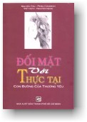

|
BuddhaSasana Home Page |
Vietnamese, with Unicode Times font |
|  |
Đối mặt với THỰC TẠI Tác
giả: PEMA CHODRON |
|
16 DÍNH MẮC VÀ CON THUYỀN Trong khi đi du lịch và gặp nhiều người với nhiều truyền thống khác nhau cũng như những người không thuộc truyền thống nào, những gì tôi tìm thấy là, để đi sâu hơn, phải có một sự cam kết hết lòng với chân lý hay mong muốn tìm ra, muốn tìm ra Ngedon hay chân lý đích thực là gì? Do đó, nếu bạn muốn nghe pháp, bạn có thể nghe từ nhiều nơi khác nhau, nhưng bạn không cam kết cho đến khi bạn gặp một phương thức đặc biệt phù hợp thật sự trong lòng bạn và bạn quyết định theo nó. Rồi bạn tạo một sự nối kết với dòng giáo pháp và trí tuệ đặc biệt ấy. Mỗi tôn giáo hay mỗi tín ngưỡng triết học đều có một hệ thống tư tưởng và trí tuệ mà nó mang và khám phá. Vấn đề là tốt nhất không nên dính vào một con thuyền nào, có thể nói như vậy, cho dù con thuyền đó có thể là gì, bởi vì nếu không, giây phút mà bạn bị thương tổn, bạn sẽ rời bỏ hay bạn sẽ tìm một cái gì khác. Gần đây tôi được yêu cầu đưa ra một chương trình cuối tuần trong một kiểu loại của trung tâm thương mại Thời Đại Mới. Nó giống như một khu thị tứ với khoảng 10 đồ vật khác nhau được giới thiệu. Tôi bị một cú đập mạnh đầu tiên khi tôi đến để trình bày bài nói đầu tiên. Có áp phích to bự, như một bảng thông báo của nhà trường, ghi rằng: Đức hạnh cơ bản, phòng 606; Rolfing, phòng 609; Du lịch tinh tú, phòng 666, v.v. và tôi là một trong nhiều điều được đưa ra. Những người mà bạn gặp ở bãi đậu xe vào lúc ăn trưa có thể nói: "Ồ, bạn sẽ làm gì cuối tuần này?". Thật rất thú vị bởi vì tôi đã không gặp bất kỳ điều gì như vậy từ rất lâu. Một lần khác tôi đã làm điều đó, để dừng lại, tôi đã nghe Rinpoche nói rằng mua sắm thật ra là luôn cố gắng tìm sự an ninh, luôn cố gắng cảm thấy tốt về chính mình. Khi người ta bám vào một con thuyền, bất kỳ con thuyền ấy là gì, thì người ta thật sự bắt đầu hành trình của một chiến sĩ. Cho nên đó là những gì tôi muốn giới thiệu. Tôi đặc biệt muốn nói rằng, bởi vì như bạn để ý, chính tôi nhắm vào điều này hơi chiết trụng trong sự kề cận của tôi và những điều gây cảm hứng cho tôi, mà có thể cho bạn ấn tượng rằng bạn có thể đi đến một sun Dance cuối tuần và rồi một kỳ nghỉ cuối tuần khác với một bậc thầy và rồi có thể đến một cuộc hội thảo của Krishnamurti. Về cơ bản dường như không phải làm như vậy. Thật tốt đừng dính mắc với một điều và để nó đưa bạn qua những đổi thay của bạn. Khi bạn thật sự nối kết với sự thiết yếu của điều đó và bạn đã ở trong hành trình, mọi thứ nói với bạn và mọi thứ giáo dục bạn. Bạn không cảm thấy mang tính cố hữu nữa, nhưng bạn cũng biết rằng phương tiện của bạn được dùng để làm việc cho bạn. Cách mà Trungpa Rinpoche huấn luyện sinh viên của ông là một sự kết hợp của dòng pháp Kagyu và dòng pháp Nyingma của Phật giáo Tây Tạng. Khi mới đến Bắc Mỹ và bắt đầu giảng dạy, ông thật sự thích những gì ông tìm thấy ở đây. Ông nhận thấy rằng sinh viên đã không biết gì cả. Ông so sánh họ với một đàn ngựa con hoang dã hay một chuồng đầy những con chó con Labrador nghịch ngợm. Họ là những đứa trẻ ngây ngô, hoạt bát nhưng đầy nghị lực, cởi mở, nhiều người trong số họ bỏ học, tóc và râu dài, không sơ mi, không giày dép. Ông thích điều đó bởi vì đó là một vùng đất màu mỡ. Ở Anh, nơi mà ông lần đầu gặp những học sinh phương Tây, những người bị hấp dẫn đối với đạo Phật là những nhà thông thái Phật giáo, những người không thể nghe giáo pháp bởi vì họ không thể buông bỏ những ý tưởng được nhận thức trước đây của họ và không làm sao để nó hòa hợp với những khái niệm đã nhận thức trước đây. Đó là trở ngại của họ, nhưng tôi chắc chắn, ông ta đã rất thích làm việc với họ. Một vấn đề ở Bắc Mỹ là chủ nghĩa vật chất (duy vật tinh thần). Ông đã đưa ra nhiều bài nói chuyện tương ứng với vấn đề này trong những ngày đầu; những chương đầu tiên trong cuốn Cutting Through spiritual Materialism (Bàn qua chủ nghĩa duy vật tinh thần) của ông diễn tả điều này nó rất rõ ràng. Tôi có thể nói một cách thực tế rằng trong năm, sáu năm gần đây, giáo lý duy nhất mà Rinpoche dạy, trong nhiều hình thức khác nhau, dưới những tên gọi khác nhau là: "Đừng tìm kiếm, hãy lắng dịu và đi sâu vào thực thể của sự vật". Ông dạy rằng: sự vùng vẫy liên tục xung quanh những vật mang tính tinh thần này chỉ là một hình thức khác của chủ nghĩa duy vật tinh thần, gắng để có thoải mái, gắng có an toàn, trong khi nếu bạn bám vào con thuyền và thật sự làm việc với nó, điều đó rõ ràng sẽ buộc bạn phải trải qua những đổi thay của bạn. Bạn sẽ gặp tất cả những vướng mắc của bạn. Bạn sẽ tiếp tục được đẩy ra khỏi tổ. Nó sẽ là một lễ nghi lớn đầu tiên và trí tuệ vĩ đại có thể sẽ đến từ đó, sự chân thành to lớn, sự phát triển và trưởng thành tinh thần chân thật. Cuộc đời con người sẽ được trải qua rất tốt. Ông ta nhấn mạnh rằng học trò của ông sẽ chỉ không ngừng vùng vẫy trong cuộc sống để gắng tiến xa hơn. Ông có thể chinh phục tất cả những hành trình như ông ta thường nói; bạn có thể tưởng tượng những hành trình đến bắc Mỹ vào những năm 1970. Nhiều người trong chúng ta không cần phải tưởng tượng điều đó. Chúng ta có trí nhớ rất tốt - chúng ta là những người đã từng thử nghiệm. -ooOoo- 17 PHIỀN NÃO Hôm nay tôi muốn nói về sự rắc rối hay phiền não. Khi bạn nghe một vài giáo lý phù hợp thật tốt với bạn và cảm thấy tin tưởng trong việc thực hành phương pháp ấy và tin tưởng đó là một phương thức đáng sống thì bạn sẽ gặp nhiều bất tiện. Đó chính là khi bạn thật sự bắt đầu bước vào hành trình của một chiến sĩ - tức là, khi bạn muốn sống một cuộc sống trọn vẹn thay vì buông xuôi theo thế sự, khi bạn bắt đầu cảm thấy niềm say mê sống và phát triển, khi sự khám phá, sự phát triển và sự hiếu kỳ trở thành con đường của bạn - thì về cơ bản, nếu bạn theo con tim của bạn, bạn sẽ nhận thấy rằng nó thường là một sự bất tiện cực kỳ. Khi qui y và trở thành một Phật tử, bạn trở thành một người tị nạn. Điều đó muốn nói rằng, bạn rời bỏ gia đình và bạn trở thành vô gia cư trong một ý nghĩa nào đó, dĩ nhiên, bạn có thể vẫn sống ở một nơi rất tốt, với gia đình và những người thân yêu hoặc ít nhất với vật cưng của bạn như mèo, chó, ngựa, sóc... Tuy vậy, trong thâm tâm, một khi bạn bắt đầu hành trình này, có một ý niệm về việc rời bỏ gia đình và trở nên vô gia cư. Hình ảnh khác về điều đó là bardo (một trạng thái trung gian). Thuật ngữ này thường liên quan đến thời kỳ giữa sự chết và sự tái sinh tiếp theo, bạn vừa mới rời bờ, nhưng bạn chưa đến nơi nào cả. Bạn không biết nơi bạn sắp đến và bạn ở ngoài khơi xa đủ lâu để chỉ có một kỷ niệm mơ hồ về nơi bạn đến. Bạn vừa mới rời khỏi nhà, bạn vừa mới trở nên vô gia cư, bạn mong muốn quay trở lại nhưng không có cách nào để quay trở lại. Đó gọi là Bardo, hay trung hữu. Ở một vài ý niệm nào đó tôi nghĩ, ngay bây giờ đó là một nơi mà tất cả chúng ta đang sống với, ngay trong buổi tập này. Mặc dầu chúng ta vẫn còn ở đây, mọi người đang nghĩ về sự rời bỏ và có một vài ý niệm về bardo, không phải hoàn toàn ở đây, cũng không phải hoàn toàn ở kia, chỉ hay lui tới trong loại không gian khó chịu này và phải ngồi đó với nó giờ này qua giờ khác. Tâm trí của bạn cứ đi tới đi lui, nhưng sự hướng dẫn cơ bản chỉ là rời khỏi nhà, đính nhãn hiệu "suy nghĩ" cho nó, rời nhà và trở thành vô gia cư với loại cảm giác lưng chừng đó về "Thời tiết đã rất ấm cúng ở đây. Thời tiết sẽ ấm cúng khi tôi quay trở lại, tôi nghĩ. Không ấm cúng hay sẽ ấm cúng ?" Kể từ ngày hôm kia, chính tôi đã cảm nhận bardo này. Chúng ta vẫn đang thực tập và tuy vẫn có một chương trình khác sắp diễn ra. Tôi cảm thấy bồn chồn, âu lo và tôi nghĩ tôi đang bị cảm cúm và phân vân không biết tại sao tôi chóng mặt, khó chịu. Đó chỉ là bardo. Chúng ta vẫn ở đây, nhưng chúng ta ở đâu? Nó quá bất tiện và phiền phức. Nó sẽ dễ chịu hơn khi trở về nhà. Con thuyền đặc biệt đang giong buồm này không phải là một con tàu chở hàng sang trọng. Nó giống như những chiếc thuyền mà những người vượt biển thường dùng. Nhưng bọn hải tặc có thể đến bất kỳ lúc nào và họ không biết họ có đến được bờ bên kia hay không và thức ăn và nước có thể sẽ cạn. Tình huống không phải là khủng khiếp nhưng rõ ràng nó có cảm giác ấy. "Đây là nơi chúng ta đã ở hay là nơi chúng ta đang đi? Đây là đâu?". Nếu bạn thực hành thiền một cách nghiêm túc - tôi không biết nghiêm túc ra sao, nhưng hãy nói là bạn thực tập một thời gian - đôi khi bạn có cảm giác về việc rời bỏ nhà hoàn toàn và trở nên vô gia cư. Hơi thở đi ra và bạn ở đâu? Hoặc đôi khi có một thực tế dễ chịu thoải mái hay có thể khó chịu nhưng vẫn chắc chắn trong tâm trí bạn, và nó tràn ngập tất cả không gian, và rồi bạn tỉnh dậy khỏi giấc mơ và nói: "Suy nghĩ" và bạn có thể phân vân bạn đang ở đâu, bạn là ai và hôm nay bạn làm gì? Tôi không thể nhớ, có phải năm nay là năm 1978 - hay tôi biết nó chưa đến năm 2000, nhưng năm gì đây? Với thời tiết này, tháng nào đây, có phải tháng 6 không? Nó hơi giống tháng 11 - có lẽ là tháng 8. Cái gì, ở đâu, khi nào? Kẻ tị nạn. Bạn được gọi là kẻ tị nạn. Trong cuốn Born in Tibet (Sinh ra ở Tây Tạng), Trungpa Rinpoche kể một câu chuyện về cách ông rời Tây Tạng. Đó là một minh chứng sống động về điều gọi là một kẻ tị nạn. Nhóm người Tây Tạng đông đúc này, có thể là hơn 300 người, gồm người già, trẻ em và những người trung niên, rời miền Đông Tây Tạng - xứ Kham - với những người hướng dẫn của họ. Khi họ đến trung tâm Tây Tạng, người hướng dẫn không biết đường nữa, bởi vì họ chỉ biết miền Đông Tây Tạng. Do đó, không có người hướng dẫn khác đưa họ đến Ấn Độ. Hơn nữa, tuyết dày đến nỗi chạm đến nách của họ vì vậy những tăng sĩ khỏe nhất đi lên trước, trải cả thân thể của họ trong tuyết và đứng lên rồi trải ra lại để làm một con đường. Đôi lúc họ đi suốt cả con đường lên các đỉnh núi chỉ để nhận ra rằng họ đã nhầm đường và phải quay trở lại. Họ không có nhiều thức ăn. Ở một nơi nọ họ phải bơi qua một con sông và áo quần của họ ướt sủng. Rinpoche nói rằng nếu họ cố gắng ngồi xuống, áo quần của họ cắt vào da họ bởi vì đá tuyết quá sắc bén, không dễ chịu gì cả. Rinpoche nói rằng khi họ đi dọc theo một con sông, họ tạo nên một loại âm thanh lẻng xẻng. Ông nói rằng không ai khác nghĩ đó là trò đùa. (ông kể những câu chuyện về việc tạo nên những chuyện đùa vui về những gì đang xảy ra và rồi ông luôn nói: "Nhưng không người nào khác nghĩ đó là trò đùa".) Khi cuộc hành trình này kết thúc, những người tị nạn nhận ra mình đang ở Ấn Độ, vô gia cư, trong một khí hậu hoàn toàn mới lạ. Nhiều người trong họ bị bệnh lao phổi ngay từ khi di chuyển từ một nơi sạch, lạnh và cao xuống một nơi bẩn, khô nóng và ẩm thấp. Cuối cùng, Chính phủ Nehru cũng rất tử tế với người Tây Tạng, nhưng khi họ mới đến và ngay cả khi người ta rất hiếu khách, những người tị nạn vẫn vô gia cư. Không ai biết họ là ai, không có sự khác nhau giữa một Tulku hay một vị trưởng tu viện với một người bình thường. Quy y, đó là những gì có nghĩa là một người Phật tử, đó là những gì có nghĩa là trở thành một người hết lòng dùng đời sống của họ để tỉnh thức thay vì mê ngủ. Trungpa là người hiểu rõ những bài học khó khăn, ông cũng là một người sống hết mình. Không phải là vấn đề thuận tiện hay bất tiện. Có một ý niệm về cuộc hành trình toàn tâm toàn ý trong cuộc đời ông. Một khi bạn biết rằng mục đích của cuộc đời chỉ đơn giản là đi về phía trước và liên tục dùng cuộc đời của bạn để tỉnh thức hơn là đưa bạn đến ngủ say, thì sẽ có một ý niệm về sự tận tâm dù bạn gặp khó khăn hay thuận lợi. Rinpoche nhấn mạnh sự bất lợi. Chẳng hạn, ông luôn bắt mọi người phải chờ cuộc nói chuyện của ông, tôi không nghĩ ông có dự tính nào hay không, nhưng đơn giản đó chính là tính cách của ông. Có một buổi lễ ủy quyền mà ông đã bắt người ta chờ ông trong 3 ngày. Bạn đã hoàn toàn không nghĩ rằng điều đó thật sự sẽ xảy ra. Khi ông muốn ai đó đến Nova Scotia, ông thường trêu chọc mọi người về sự thích nghi dễ chịu của họ. Ông nói: "Ồ, bạn sẽ không muốn đi bởi vì nó có nghĩa là rời bỏ căn nhà xinh xắn, công việc tốt của bạn. Bạn sẽ không có thời gian thoải mái để tìm một công việc ở Nova Scotia". Đôi khi tôi nghĩ rằng ông muốn mọi người đến Nova Scotia chỉ vì nó quá bất lợi. Sự thích ứng dễ chịu có thể làm hại tinh thần - đó là thông điệp chung. Lựa chọn sự ấm cúng, như lý do chính để tồn tại, trở nên một trở ngại liên tục đối với việc tạo một bước nhảy và làm một điều mới mẻ, làm một điều bất thường, như đi đến một vùng đất xa lạ. Sawang Osel Mukpo nói với tôi rằng Rinpoche bảo anh ta rằng ông muốn sắp xếp đồ đạc trong phòng để nó khá không dễ dàng với lấy một vật dụng. Thay vì đặt cái bàn gần để mọi việc dễ dàng, ông thích để nó ra xa khoảng nửa inche để bạn phải với tay đến. Rinpoche cũng nói nhiều lần rằng thật tốt để mặc quần của bạn chật một chút. Ông thường mặc một cái obi, một cái thắt lưng to với một bộ kimono, bên trong áo quần ngoài, khá chật, để nếu ông đi đứng uể oải, ông ta sẽ khó chịu - ông phải giữ "đầu và vai". Ông thiết kế đồng phục. Tôi nhớ một bộ đồng phục ông đã thiết kế và bị xé ở một buổi lễ: Nó được làm bằng len gây ngứa, với một cái cổ cao, và nhiệt độ bên ngoài khoảng 90 độ với độ ẩm cao. Ông khẳng định rằng những bất lợi này thật sự làm bạn vui tươi lên và giữ cho bạn tỉnh thức. Khi tôi cảm thấy hơi mệt mỏi vào những ngày cuối cùng, nó như một sự thúc giục để nghĩ ra: "Tôi sẽ làm gì, chỉ suy sụp? Vâng, tôi sẽ chỉ suy sụp. Ai quan tâm?" Rồi tôi để ý rằng người khác bắt đầu cảm thấy khó chịu bởi vì tôi đã thô lỗ với họ. Họ đã không làm gì sai, tôi chỉ cảm thấy khó chịu. Bạn nhận ra rằng cách bạn cảm nhận tác động người khác và tuy bạn không muốn giả vờ bạn cảm thấy tốt khi thật sự bạn đang cảm thấy khủng khiếp. Nó như một công án và bạn được bỏ lại với nó. Nếu bạn thật sự tận tâm, bạn sẽ được tiếp tục bỏ lại cùng với công án này về sự bất tiện hay khó chịu. Thật quá bất tiện để nhận ra rằng bạn đang thấy khó chịu, rằng bạn đang đau đầu. Thật bất lợi khi bạn bị ốm, khi đánh mất hiện tại đầy nhiệt tình của bạn. Thật khó chịu khi người khác không xem bạn tuyệt vời, khi người ta thấy rằng bạn có trứng trong bánh mì, rằng giữa buổi lễ Oryoki có một sợi chỉ tơ làm sạch răng mắc kẹt dưới chân bạn. Thật quá khó chịu để nhận ra chính bạn gặp rắc rối, quá khó chịu để nhận ra chính bạn không đạt mục tiêu. Chính giáo lý đầu tiên tôi nhận được mà tôi có thể nhớ là ở Dharmadhatu, một trong những trung tâm mà Rinpohe đã thiết lập. Một trong những sinh viên lớn hơn đang đưa ra một cuộc đàm thoại và anh ta nói: "Nếu bạn thú vị trong những giáo lý này, thì bạn phải chấp nhận sự kiện rằng bạn sẽ không bao giờ gom được nó tất cả với nhau". Đó là một câu nói làm tôi hoảng hồn. Ông nói một cách rõ ràng: "Bạn sẽ không bao giờ gom nó tất cả với nhau, bạn sẽ không bao giờ gom hành động của bạn đi với nhau đầy đủ và hoàn hảo. Bạn sẽ không bao giờ cột được tất cả những thì giờ rỗi rảnh lại với nhau". Cuộc sống đầy bất tiện, thật bất tiện khi quản lý tu viện này, tôi không thể nói với bạn. Bạn có thể sắp xếp bếp núc lại và người giữ sách bỏ đi. Bạn có thể sắp xếp sách vở và người giữ nhà bỏ đi. Bạn có một người giữ nhà tốt, một đầu bếp tốt, một người giữ sách tốt và bỗng nhiên không có Tăng và Ni trong tu viện. Rồi thì có lẽ mọi vật sẽ hoạt động và nước cúp trong một tuần, sẽ không có điện và thức ăn bắt đầu thối rữa. Thật là bất tiện và khó chịu. Sự tận tâm là một món quà quí báu, nhưng không ai có thể thật sự trau dồi nó cho bạn. Bạn phải tìm con đường có tấm lòng và rồi đi trên đó một cách hoàn hảo. Trong khi làm điều đó, bạn lại gặp sự căng thẳng thần kinh, nhức đầu và thất bại nhục nhã. Nhưng trong sự thực tập tận tâm và sự theo đuổi tận lực ấy, sự bất lợi này không phải là một trở ngại. Nó chỉ đơn giản là một sự hòa trộn dĩ nhiên của cuộc sống, một năng lượng dĩ nhiên của cuộc đời. Không những thế, đôi khi bạn chỉ mới lên máy bay và tất cả điều đó đều rất tốt và bạn nghĩ: "Đây rồi, đây là con đường của tôi". Nhưng khi bạn bỗng bị thất bại nhục nhã, mọi người nhìn bạn, bạn tự nói: "Điều gì xảy ra với con đường của tôi? Điều này có vẻ như con đường vấy đầy bùn lên mặt tôi". Vì bạn tận tâm cam kết với hành trình của người chiến sĩ, nó làm bạn bị châm chích đau nhói, nó thọc lét bạn. Giống như ai đó cười vào tai bạn, thách thức bạn nghĩ ra những gì để làm khi bạn không biết gì để làm. Nó hạ thấp bạn. Nó cởi mở con tim bạn. -ooOoo- 18 BỐN ĐIỀU NHẮC NHỞBốn điều nhắc nhở truyền thống là bốn điều nhắc nhở căn bản về tại sao người ta có thể tạo nên một nỗ lực liên tục để quay trở về với phút giây hiện tại. Điều đầu tiên nhắc nhở chúng ta về sự sinh ra làm người quí giá của chúng ta; điều thứ hai, nhắc nhở về sự thực tập về vô thường; điều thứ ba, về qui luật của nghiệp; điều thứ tư, về sự vô nghĩa của việc liên tục luẩn quẩn trong vòng luân hồi. Hôm nay, tôi muốn nói về bốn phương thức liên tục đánh thức bạn và nhắc bạn tại sao bạn thực tập, tại sao khi bạn quay về nhà, bạn nên cố gắng tạo một không gian để có thể Thiền tập mỗi ngày và chỉ để hiện hữu với chính bạn theo cách mà bạn đã ở đây trong một tháng. Tại sao thậm chí thật uổng phí thời giờ để tỉnh thức hơn là để ngủ? Tại sao phải dành thời gian còn lại gieo những hạt giống của tỉnh thức, tham vọng mà bạn muốn tạo một bước nhảy, cởi mở hơn và trở thành một chiến sĩ ? Tại sao? Khi có tất cả những lo âu về tài chính, về vật chất, khi có vấn đề với bạn bè, với cộng đồng, vấn đề với mọi thứ và bạn cảm thấy bị kẹt, tại sao phải tốn công nhìn lên bầu trời và gắng tìm ra một lỗ hổng hay một khoảng không gian trong sự hỗn loạn đó? Chúng ta luôn tự hỏi về những vấn đề rất cơ bản này. Bốn điều nhắc nhở sẽ khơi mở cho những vấn đề này. Bạn có thể suy nghĩ về chúng bất kỳ lúc nào, dù bạn sống ở tu viện Gampo hay ở Vancouver hoặc ở Minnesota, Chicago, New york City, Black Hole of Calcutta, trên đỉnh Everest, dưới đáy đại dương. Dù bạn là một con rắn nước Naga (water-being; Sinh vật nước) hay một con ma, một con người, một sinh vật địa ngục (hell-being), một loại chư thiên (god-realm person) - bất kể bạn là gì - bạn có thể suy nghĩ kỹ về 4 điều nhắc nhở này và tại sao bạn thực tập. Đ iều nhắc nhở đầu tiên là sự đáng quí khi được làm người. Tất cả chúng ta ngồi đây đều có được cái mà truyền thống gọi là một sự sinh ra hiếm quí và tuyệt vời. Tất cả những gì bạn phải làm là nhặt một tạp chí Time lên và so sánh chính bạn với hầu như bất kỳ ai trên bất kỳ trang báo nào để nhận ra rằng, thậm chí bạn có những nỗi khổ đau của bạn, sự không hài lòng tâm lý của bạn, cảm giác bị mắc kẹt của bạn...nhưng bạn vẫn thuộc loại diễm phúc hơn khi so sánh với những người bị cán bởi xe tăng, bị chết đói bị đánh bom, bị ở tù, bị nghiện rượu nghiêm trọng hay nghiện ma túy hoặc bất cứ cái gì mang tính tự hủy hoại bản thân. Ngày hôm kia tôi đọc một tờ báo kể về một cô gái 19 tuổi bị nghiện ma túy. Cả cuộc đời cô, cô sẽ tiếp tục chích ma túy cho đến khi cô chết. Mặc khác, sống một cuộc sống thoải mái trong đố mọi thứ đều hoàn toàn đắt tiền cũng không hữu ích gì cả. Bạn không có cơ hội để phát triển hiểu biết về con người đau khổ ra sao hay có ý thức nhiều về tấm lòng cởi mở. Tất cả đều bị kẹt trong một cảm giác có 2 hay 3 trăm đôi giày trong tủ, như Imelda Marcos, hay một căn nhà đẹp với một hồ bơi hoặc bất cứ cái gì bạn có.Điều cơ bản l à nhận ra rằng chúng ta có mọi thứ đang đi cùng chúng ta. Chúng ta không có nỗi đau cực kỳ nào mà không thể tránh khỏi. Chúng ta không có niềm vui hoàn toàn nào dụ dỗ chúng ta vào si mê. Khi chúng ta bắt đầu cảm thấy chán nản, thật hữu ích để nghĩ kỹ về điều đó. Có lẽ đây là lúc tốt nhất để đọc báo nhiều và nhận ra cuộc đời có thể khủng khiếp như thế nào. Chúng ta luôn ở trong một vị trí mà một điều gì đó có thế xảy ra cho chúng ta. Chúng ta không biết chúng ta là những người Do thái sống ở Pháp, Đức hoặc Hà Lan vào những năm 1936, chúng ta chỉ dẫn dắt cuộc đời bình thường của chúng ta, thức dậy vào buổi sáng, ăn 2 hay 3 bữa trong một ngày, có những thói quen hằng ngày và rồi một ngày kia Gestapo đến và đưa chúng ta đi. Hoặc có thể chúng ta đang sống ở Pompeii và đột nhiên một núi lửa bộc phát và chúng ta ở dưới nhiều dung nham núi lửa. Bất cứ điều gì cũng có thể xảy ra. Bây giờ là một thời gian không chắc chắn. Chúng ta không biết - ngay cả ở mức độ cá nhân, ngày mai, bất kỳ ai trong chúng ta có thể nhận ra rằng chúng ta có một căn bịnh vô phương cứu chữa hay rằng một ai đó mà chúng ta rất yêu mắc phải căn bệnh đó.Nói cách khác, cuộc đời có thể đảo lộn tất cả bất kỳ điều gì cũng có thể xảy ra. Thật đáng quí, thật ngọt ngào và quí báu cuộc đời của chúng ta! Chúng ta đang ở độ tuổi trẻ đẹp này, chúng ta có sức khỏe và thông minh, có giáo dục, tiền bạc và đại loại như vậy. Tuy mỗi người trong chúng ta đều có hơi chán nản suốt khóa học này, mỗi một người trong chúng ta đều có cảm giác đó trong lòng mình. Điều đó xảy ra một cách xác định. Một điều mà Rinpoche dạy và cũng thật sự bày tỏ với tất cả chúng ta - ngay cả khi không dễ thành công trong việc đẩy nó đi - là rằng chỉ vì bạn đang cảm giác chán nản không có nghĩa là bạn quên đi sự quí giá của cả tình huống. Sự chán nản cũng giống như thời tiết, nó đến rồi đi. Rất nhiều những cảm giác, xúc cảm, ý nghĩ khác nhau đến rồi đi mãi mãi, nhưng đó không phải là lý do để quên đi giá trị của cả tình huống. Sự nhận ra cuộc đời quí giá như thế nào là một trong những năng lực mạnh mẽ nhất của bạn. Nó giống như lòng biết ơn. Nếu bạn cảm thấy biết ơn đối với cuộc đời, thì dù những chiếc xe tải Nazi đến và mang bạn đi, bạn cũng không đánh mất cảm giác biết ơn đó. Có một khẩu ngữ Đại thừa (Mahayana) như sau: "Hãy biết ơn mọi người". Về cơ bản, một khi bạn có cảm giác biết ơn này đối với cuộc đời và sự quí báu của việc sinh ra làm người thì nó sẽ giúp bạn rất nhiều. Nếu bạn nghĩ bạn có thể bắt đầu cảm thấy biết ơn khi bạn ở cõi địa ngục, nếu bạn nghĩ bạn có thể bỗng nhiên trở nên vui tươi, bạn sẽ nhận ra khoảng 50% khó khăn trong tình huống hiện tại của chúng ta; bạn sẽ có phiền toái khi làm điều đó. Chúng ta thực sự ở trong tình huống dễ nhất và tốt nhất. Rất tốt để nhớ điều đó. Rất tốt để nhớ tất cả những cuộc nói chuyện mà bạn đã từng nghe về điều thiện cơ bản, lòng vui vẻ và sự biết ơn. Truyền thống Vajrazana nhấn mạnh nhiều đối với tình yêu sâu sắc mà có thể là một hình thức của lòng biết ơn vô hạn, có nhiều sự suy niệm trong đó. Tình yêu sâu sắc tức là nhớ tất cả những ai làm việc cực nhọc, có cùng nỗi đau, có cùng chứng loạn thần kinh như chúng ta, có cùng sự chán nản, sự đau răng, quan hệ khó khăn, cùng những khó khăn như chúng ta - mọi thứ đều giống nhau - mà họ không từ bỏ được; họ là một nguồn cảm hứng cho chúng ta. Bạn có thể nói họ là những nam và nữ anh hùng, bởi vì khi chúng ta đọc những câu chuyện của họ (khi chúng ta đọc câu chuyện của Milarepa chẳng hạn), thay vì cảm thấy khủng khiếp, chúng ta đồng cảm với vị ấy trong suốt câu chuyện. Chúng ta nhìn thấy chính chúng ta trong mỗi đoạn, chúng ta nhận ra rằng có thể tiếp tục và không vứt bỏ. Chúng ta cảm thấy tình yêu sâu sắc đối với những người làm việc vất vả để tạo sự thoải mái cho chúng ta. Đôi lúc bạn gặp một giáo viên đặc biệt hình tượng hóa điều đó cho bạn, và rồi bạn cũng có một lãnh tụ tinh thần để cảm thấy yêu thương sâu sắc. Nó như thử những người này truyền xuống một dòng dõi của lòng biết ơn và sự không sợ hãi, niềm vui và khả năng nhìn thấy sâu sắc. Và họ cũng như chúng ta, ngoại trừ rằng đôi khi chúng ta đánh mất tâm hồn. Có những ví dụ làm chúng ta biết ơn to lớn và thương yêu đối với những người này. Nó cho chúng ta một ý niệm về tinh thần mà chúng ta có thể theo đuổi trong dòng dõi đó. Rồi thì những gì chúng ta làm để nhận ra sự quí báu của việc sinh ra làm người có thể là một nguồn cảm hứng cho những người khác. Trong những năm đầu thập niên 70, một người bạn nói với tôi: "Bất kỳ điều gì bạn có thể học về việc làm bạn với cảm giác nản lòng, hay cảm giác sợ hãi, hoặc về tình trạng khó khăn, phức tạp, ý niệm về sự bị hạ cấp, ý niệm về sự phẫn hận - bất kỳ điều gì bạn có thể làm với những điều này là hãy vui lòng với chúng, bởi vì điều đó sẽ là một nguồn cảm hứng đối với người khác". Đó thật sự là một lời khuyên tốt. Vì vậy khi tôi bắt đầu trở nên phiền muộn, tôi thường nhớ "Bây giờ đợi một phút. Có lẽ tôi phải nghĩ ra cách để tự đánh thức mình thật sự, bởi vì có nhiều người đau khổ như vậy, và nếu tôi có thể làm điều đó, họ cũng có thể làm được điều đó". Tôi cảm giác một ý niệm về sự liên hệ. "Nếu một Shmuck như tôi có thể làm điều đó, bất cứ ai cũng có thể làm được điều đó". Đó là những gì tôi thường nói, rằng nếu một người đau khổ như tôi, người hoàn toàn bị kẹt trong giận dữ và phiền muộn, bội phản - nếu tôi có thể làm điều đó thì bất kỳ ai khác cũng có thể làm, vì thế tôi đang cố gắng. Đó là một lời khuyên thường giúp tôi nhận ra sự sinh ra làm người quí báu của tôi. Điều nhắc nhở thứ hai l à về tính vô thường của vạn hữu. Đời sống rất ngắn ngủi. Thậm chí chúng ta sống 100 tuổi, nó cũng rất ngắn. Hơn nữa, tuổi thọ của con người là không thể nói trước. Cuộc đời của chúng ta là vô thường. Chính tôi có cao nhất là 30 năm nữa để sống, có thể là 35 năm, nhưng rồi nó sẽ dừng lại. Cũng có thể tôi chỉ có 20 năm để sống. Có thể thậm chí tôi không có một ngày nữa để sống. Thật hữu ích để nghĩ rằng tôi còn rất ít chặng đời dài đó. Nó làm tôi cảm thấy rằng tôi muốn sử dụng nó thật tốt. Nếu bạn nhận ra rằng bạn không có nhiều năm nữa để sống và nếu bạn sống như thử bạn thật sự chỉ còn sống một ngày, thì ý niệm vô thường làm mạnh hơn cảm giác quí báu và sự biết ơn. Về mặt truyền thống thường cho rằng mỗi khi bạn sinh ra, cũng tức là bạn bắt đầu chết đi.Tôi nhớ rằng ở Boulder, hàng năm người Hare Krishna thiết lập một cuộc trưng bày về hình dáng cuộc đời con người bắt đầu là một đứa bé mới sinh rồi qua tất cả những giai đoạn của cuộc đời. Bạn không thể không nhận ra cái hình dáng này lớn lên và mạnh lên hơn trong sự quan trọng nhất của cuộc đời, cho đến khi toàn bộ sự việc bắt đầu đi xuống và hình dáng được biểu hiện trở nên già hơn và cái cuối cùng là một xác chết. Bạn cũng không biết là bạn có đặc ân đi qua toàn bộ tiến trình ấy hay không. Ngay cả nếu bạn có, thì vô thường cũng rất thật. Khi bạn bị phiền muộn, bạn có thể nói với chính mình: "Tại sao phải tốn công ngồi? Tại sao phải mất công tìm ra cho chính tôi và cho người khác, sự phiền muộn này là gì? Tại sao nó làm tôi chán nản? Tại sao bầu trời hôm nay trong xanh như vậy nhưng hôm nay mọi thứ lại xám xịt. Tại sao mọi người tươi cười với tôi hôm qua nhưng bây giờ họ lại nhăn mặt với tôi? Tại sao hôm qua tôi dường như làm đúng mọi việc mà hôm nay lại làm sai mọi việc? Tại sao và tại sao?". Nếu bạn một mình ở nơi ẩn dật, bạn sẽ vẫn bị phiền muộn. Không có ai để trách cứ; chỉ là cảm giác ấy nảy sinh. Bạn tự hỏi nó là gì? Nó là gì? Nó là gì? Tôi muốn biết. Làm thế nào tôi có thể tự đánh thức mình? Làm thế nào tôi có thể làm điều đó mà nó không phải là một thói quen hoàn toàn? Làm thế nào tôi có thể thoát ra khỏi lối sống nhàm chán này? Làm thế nào chúng ta từ bỏ sự nhàm chán của cuộc sống chúng ta? Giáo lý dạy: "À, đó là lý do chúng ta ngồi Thiền. Đó là ý nghĩa của chánh niệm. Nhìn một cách cẩn thận, chú ý đến từng chi tiết". Nhớ về vô thường là động cơ thúc đẩy bạn nhìn lại, quay lại giáo lý để xem chúng nói với bạn điều gì, làm thế nào để làm việc với cuộc đời của bạn, làm thế nào để đánh thức chính bạn, làm thế nào để tươi vui lên, làm thế nào để đối mặt với các cảm xúc. Đôi lúc, bạn sẽ vẫn đọc lui đọc tới nhưng bạn không thể tìm ra câu trả lời ở đâu cả. Nhưng rồi một ai đó trên xe buýt sẽ nói cho bạn, hoặc bạn sẽ tìm ra nó ở giữa một cuốn phim, hoặc có thể thậm chí trong một chương trình thương mại trên Tivi. Nếu bạn thật sự có những câu hỏi này, bạn sẽ tìm ra những câu trả lời bất kỳ ở đâu. Nhưng nếu bạn không có câu hỏi, rõ ràng sẽ không có câu trả lời. Vô thường nghĩa là thực tế cuộc đời trôi nhanh. Có vài người rất tinh xảo trong thực tập chánh niệm đến nỗi họ có thể thực sự thấy mỗi một sự chuyển động nhỏ của tâm trí - thay đổi, thay đổi, thay đổi. Họ cũng có thể cảm thấy thân thể thay đổi, thay đổi và thay đổi. Thật rất đáng ngạc nhiên. Trái tim bơm máu luôn luôn và máu luôn lưu thông, thức ăn được tiêu hóa và toàn tiến trình sống xảy ra. Nó gây kinh ngạc và nó rất vô thường. Một ngày nào đó bạn du lịch trên một chiếc xe hơi và đó có thể là một sự kết thúc. Nếu bạn thật sự hoang tưởng, vô thường có thể làm cho bạn điên tiết bởi vì bạn hoảng sợ sẽ vượt khỏi sự kềm chế, bạn sợ đi khỏi nhà của bạn. Bạn nhận ra cuộc đời nguy hiểm như thế nào. Thật tốt để nhận ra nó nguy hiểm như thế nào bởi vì điều đó làm cho ý niệm về vô thường được chú trọng. Thật tốt để nhận ra rằng bạn sẽ chết, rằng sự chết đang ở ngay trên vai bạn luôn luôn. Rất nhiều tôn giáo có nhiều suy tư về cái chết để nó ăn sâu trong bộ não của chúng ta rằng cuộc đời không phải kéo dài mãi mãi. Nó có thể kết thúc trong một khoảnh khắc sắp tới? Đôi khi người ta cho rằng sự chấm dứt của mỗi hơi thở ra của chúng ta thật sự là sự chấm dứt; cơ hội là ở chỗ chết một cách hoàn toàn. Suzuki Roshi đưa ra sự chỉ dẫn: "Ngồi yên, không đoán trước. Sẵn lòng chết đi chết lại". Hãy lấy đó như một câu nhắc nhở. Sẵn lòng chết đi chết lại làm mạnh hơn sự nhắc nhở đầu tiên, ý niệm về lòng biết ơn và sự quí báu. Vô thường có thể dạy bạn nhiều về cách làm thế nào để vui tươi lên. Đôi khi hãy để nó làm bạn hoảng sợ. Thường là: "Thực tập như thử tóc bạn đang bị lửa cháy". Cũng được nếu nó làm bạn hoảng sợ. Sợ hãi có thể làm bạn bắt đầu hỏi nhiều về các vấn đề. Nếu nó không làm bạn sa sút tinh thần, nó sẽ làm bạn phân vân: "Nỗi sợ hãi này là gì? Nó đến từ đâu? Tôi sợ điều gì?" Có thể bạn hoảng sợ về những điều kích động nhất mà bạn phải học. Vô thường là một nhắc nhở lớn. Điều nhắc nhở thứ ba l à sự nhắc nhở về Nghiệp (karma): Mỗi hành động đều dẫn đến kết quả. Người ta có thể đưa ra cả một cuộc hội thảo lớn về Nghiệp. Nhưng về cơ bản, trong cuộc sống hằng ngày của chúng ta, đó là một điều nhắc nhở rằng chúng ta cần phải sống như thế nào, đặc biệt quan trọng ở cấp độ tâm linh. Mỗi lần bạn có thiện ý nhận thức ý nghĩ của bạn, hãy để chúng trôi đi và quay trở lại với sự bắt đầu mới của khoảnh khắc hiện tại; bạn đang gieo những hạt giống của tỉnh thức trong sự vô thức của bạn. Sau một thời gian những gì xảy ra là một ý nghĩ tỉnh thức hơn, cởi mở hơn. Bạn đang huấn luyện chính bạn về hướng cởi mở hơn là say ngủ. Bạn có thể nhận thấy mình bị kẹt, nhưng bạn có thể giải thoát chính bạn bằng cách dùng tâm trí của chính mình, bằng cách thật sự sẵn lòng quay trở lại chỉ với hiện tại, với tính cấp thiết của giây phút hiện tại. Mỗi lần bạn có thiện ý làm điều đó là bạn đang gieo những hạt giống cho tương lai của bạn, trau dồi sự tỉnh thức bằng cách khao khát buông bỏ và làm một điều gì mới mẻ hơn. Về cơ bản, điều đó chính là buông bỏ những ý nghĩ, những dòng cuộn của ý nghĩ và quay trở về khoảnh khắc hiện tại.Trong một bài kệ tụng chúng ta đọc: "Bất cứ cái gì nảy sinh đều mới. mẻ, là thiết yếu của nhận thức. Mong sao sự thực tập Thiền của tôi được tự do vượt thoát khỏi các dự tính". Sự bắt đầu trở lại ở đây có nghĩa là sẵn lòng ngồi thẳng lên nếu như bạn uể oải. Nếu bạn muốn nằm trên giường cả ngày với chăn trùm trên đầu, có nghĩa là sẵn lòng đứng dậy và đi tắm với xà bông thật tốt, đi đến hiệu thuốc và mua một thứ gì có vẻ tốt, ủi áo sơ mi của bạn. đánh bóng giày của bạn, bất kỳ điều gì làm bạn tỉnh thức. Nó có nghĩa là làm bất cứ điều gì để kháng cự lại lòng ham muốn của bạn muốn ném đi tất cả những thứ trên nền nhà, đẩy nó xuống giường, không chùi rửa, chìm vào bóng tối. Khi những cảm giác này nảy sinh, nó như thử cả thế giới là sự cộng tác với trạng thái tâm trí của chính bạn. Bóng tối dường như ở khắp nơi. Người ta bị tức giận vì bạn, mọi thứ dường như được khép kín lại. Cố gắng làm mình vui lên không phải dễ, và đôi khi nó có vẻ phê bình quá gắt gao, giống như một điều trái tự nhiên. Nhưng, điều nhắc nhở là nếu bạn muốn thay đổi sự mắc kẹt quen thuộc của bạn, bạn là người duy nhất có thể làm điều đó. Tôi không nói với bạn điều gì để làm, tôi chỉ nói về việc quan sát làm thế nào bạn luôn làm nhưng điều quen thuộc tương tự khi nhưng cảm giác xấu - khó chịu, phiền muộn, sợ hãi - bắt đầu xảy ra. Bạn luôn làm cùng một điều, bạn ngưng một số thói quen rất cũ. Theo luật Nghiệp quả, mọi hành động đều dẫn đến kết quả. Nếu bạn nằm trên giường cả ngày với chăn trùm đầu, nếu bạn ăn quá no, cầm thử một triệu trong đời bạn, nếu bạn say, say bí tỉ... tất cả những điều đó cũng chỉ làm bạn phiền muộn và làm bạn thất vọng. Càng lớn tuổi,bạn sẽ càng biết chúng sẽ làm bạn cảm thấy khốn khổ như thế nào. Quy luật về Nghiệp cho rằng: Á, bạn muốn cảm thấy như thế nào vào ngày mai, tuần tới, năm tới, 5 năm nữa, 10 năm nữa? Điều ấy tùy thuộc bạn sử dụng cuộc đời bạn như thế nào. Nó không có nghĩa là bạn phải là người hay làm vui tươi lên, hay rằng những xu hướng quen thuộc của bạn không bao giờ thắng bạn. Đó chỉ là điều bạn phải làm với ý niệm về sự tự nhắc nhở. Đôi khi bạn có thể nói: "Không quan tâm", nhưng sau ngày thứ tư nằm dưới những tấm ra trải giường trong áo quần dơ bẩn bốc mùi của bạn, với chiếc chai trống rỗng bên giường - dù viễn cảnh như thế nào - bạn sẽ thầm nhủ: "Có thể ta nên đi ra ngoài và mua một áo sơ mi mới, tắm và đi ngắm biển hoặc đi bộ dưới chân núi, ăn một bữa ăn ngon hay làm một điều gì đó để nâng cao tinh thần của mình, để làm ta tươi vui lên". Thậm chí chúng ta có thể rất nặng lòng, thay vì ăn thức ăn dở, chúng ta có thể đi ra ngoài mua một miếng thịt bò phi-lê (fillet mignon) ngon nhất hoặc bất cứ cái gì có thể - trong trường hợp của tôi là một quả đào ngon nhất. Giáo lý về Nghiệp dạy chúng ta hãy gieo những hạt giống tốt để gặt được những quả tốt. Hãy nhớ rằng điều đó cực kỳ hữu ích. Vì vậy khi bạn nhận thấy mình ở một nơi tối tăm, nơi mà bạn đã đến không biết bao nhiêu lần, bạn có thể nghĩ: "Có thể đó là lúc lấy một cái xẻng vàng nhỏ và bẩy chính mình ra khỏi nơi này". Tôi nhớ rất rõ lần phỏng vấn đầu tiên với thầy giáo của tôi, Chogyam Trungpa Rinpoche, bởi vì tôi đã quá ngập ngừng như thế nào đó khi tôi nói với ông về những gì thực sự là vấn đề trong đời tôi. Thay vào đó, tôi đã lãng phí cả cuộc phóng vấn để nói huyên thuyên. Chốc lát ông lại hỏi: "Sự thực tập Thiền của con ra sao?" và tôi trả lời: "Ồ, tốt" và rồi tôi lại nói huyên thuyên. Khi cuộc phỏng vấn kết thúc, tôi thốt lên "Tôi đã có khoảng thời gian khủng khiếp này và tôi đầy giận dữ, plah-plah-plah" trong nửa giây cuối. Rinpoche đưa tôi đến cửa và nói: "À, điều đó có vẻ như một lượng sóng lớn tiến đến và đẩy bạn xuống. Bạn nhận thấy mình nằm dưới đáy đại dương với mặt chạm cát và thậm chí cát tràn vào mũi, vào miệng, vào tai, vào mắt bạn, bạn đứng dậy và bạn bắt đầu đi bộ trở lại. Rồi lượng sóng tiếp theo tiến đến và lại đánh bạn ngã xuống. Sóng cứ tiến đến, nhưng mỗi một lần bạn bị đánh ngã, bạn đứng lên và cứ tiếp tục đi. Sau một lúc, bạn sẽ nhận thấy những con sóng dường như trở nên nhỏ bé hơn". Đó l à sự hoạt động của nghiệp. Nếu bạn cứ nằm ở đó, bạn sễ chết đuối, nhưng bạn thậm chí không có đặc ân của sự chết. Bạn chỉ sống với ý niệm về chết đuối luôn luôn. Vì vậy đừng thất vọng và nghĩ: "À, tôi leo ra khỏi giường, đi tắm một cái. Tại sao tôi không ở trong rạp chiếu bóng Walt Disney bây giờ. Tôi nghĩ tôi sắp hóa thành Bạch Tuyết. Tôi nghĩ tôi sẽ sống một cách hạnh phúc sau đó. Hoàng tử đứng bên tôi; tôi đứng dậy. Làm sao tôi không sống hạnh phúc sau đó?". Sóng cứ đến và đẩy chìm bạn xuống, nhưng bạn lại đứng lên và với một ý niệm tự nâng mình lên, đứng thẳng lên. Như Rinpoche bảo: "Sau đó một lúc bạn sẽ nhận ra rằng sóng dường như trở nên nhỏ bé hơn?" Đó thật sự là những gì diễn ra, đó là cách mà Nghiệp hoạt động. Vì vậy hãy để điều đó thành một điều nhắc nhở. Nó quí giá và nó ngắn gọn, bạn có thể sử dụng nó tốt.Đây l à một câu chuyện khác về Rinpoche sắp đi gặp thầy của ông, Jamgon Kongtrul. Rinpoche nói rằng vào một buổi sáng đặc biệt khi ông đi vào, Jamgon Kongtrul cầm lên một vật được làm bằng bạc trắng rất đẹp, lấp lánh trong ánh nắng mặt trời với một tay cầm dài và một cái gì giống như mũi chĩa trên đầu. Jamgon Kongtrul bảo rằng nó được gởi đến cho ông từ nước Anh. Rinpoche tiến đến và ngồi xuống, họ nhìn vào đó. Jamgon Kongtrul bảo: "Nó dùng để ăn" và khi những người giúp việc mang thức ăn vào, ông cầm bốn mũi chĩa, đâm nó vào trong những mẩu thức ăn, cầm chúng lên, bỏ vào miệng và nói: "Đây là cách họ ăn với cái này ở nước họ. Họ đâm nó vào trong thức ăn và thức ăn dính với bốn mũi chĩa này, rồi họ bỏ nó vào miệng". Rinpoche nhìn vào vật đó và nghĩ nó thật là một vật tinh xảo. Rồi Jamgon Kongtrul bảo ông: "Một ngày nào đó con sẽ gặp những người làm những vật này và con sẽ làm việc với họ. Nó sẽ không dễ dàng, bởi vì con sẽ nhận ra rằng chúng thật thú vị khi ngủ hơn là thức dậy". Đó là những gì ông ta bảo chúng tôi. Vì vậy khi bạn nhận thấy rằng điều đó cũng đúng với bạn, tự nhắc nhở bạn rằng nó tùy thuộc vào bạn để bạn thật sự kinh nghiệm sự biết ơn và sự quí giá của cuộc đời bạn, sự lướt nhanh và sự quí hiếm của nó, hay để bạn trở nên phẫn hận hơn, cay nghiệt hơn, chua xót và cảm thấy đầy lừa dối hơn. Nó tùy thuộc vào cách mà luật Nghiệp quả hoạt động như thế nào.Điều nhắc nhở cuối c ùng là sự vô nghĩa của việc liên tục luẩn quẩn trong vòng Luân hồi (Samsara). Một vài người từng nói rằng họ cảm thấy như thử họ ở trên một dĩa nhạc mà cứ quay vòng vòng hoài; họ bị mắc kẹt theo vết xe cũ này, và một lần họ đi quanh, vết xe trên dĩa hát cũng ngày càng sâu hơn. Đôi khi tôi cũng được nghe người ta nói điều đó, khi họ nghe chính họ nói, họ cảm thấy như thử họ là một máy ghi âm chơi lui chơi tới với một băng nhạc. Họ chán ngấy điều đó nhưng dù sao họ cũng cứ chơi nó bởi vì có một sự xác định nhỏ buồn cười ở đó tạo cho họ cảm giác an toàn dù nó có thể là đau đớn. Đó là Luân hồi (Samsara).Cái cốt lõi của Luân hồi là khuynh hướng tìm niềm vui và tránh đau khổ của chúng ta, tìm sự an toàn và tránh sự không có chỗ dựa, tìm an ủi và tránh sự bất an. Lời dạy căn bản là rằng đó là cách chúng ta làm chính chúng ta khổ đau, không hạnh phúc, kẹt trong một quan niệm, một giới hạn nhỏ bé của thực tại. Đó là cách chúng ta giữ chúng ta bị dính trong một kén tằm. Ngoài kia là tất cả những hành tinh, tất cả các thiên hà và không gian mênh mông, nhưng bạn bị dính mắc trong cái kén này, hoặc có thể bạn đang ở trong một bao con nhộng, giống như một viên Vitamin. Khoảnh khắc này nối tiếp khoảnh khắc khác, bạn đang quyết định rằng bạn thà ở trong chiếc vỏ bọc con nhộng đó. Bạn thà tồn tại là một viên Vitamin hơn là chịu đau bước ra khỏi và vào trong không gian to lớn ấy. Cuộc đời trong vỏ bọc con nhộng là ấm cúng và an toàn. Chúng ta tự lo liệu lấy nó. Nó an toàn, có thể nói như vậy, nó thuận tiện và nó đáng tin cậy. Chúng ta biết khi chúng ta đi vào trong căn nhà của chúng ta đúng nơi đồ đạc được bày biện và đó là lối sống chúng ta giống như vậy. Chúng ta biết chúng ta có tất cả những trang thiết bị chúng ta cần và chúng ta có áo quần mà chúng ta thích. Nếu chúng ta cảm thấy không thoải mái, chúng ta chỉ cần lấp đầy những lỗ hổng đó. Trí óc chúng ta luôn tìm kiếm những nơi an toàn. Chúng ta đang ở vùng an toàn này và đó là những gì chúng ta xem xét cuộc đời, tự lo liệu lấy sự an toàn. Chết là sự mất đi điều đó. Đó là điều chúng ta hãi sợ, đó là điều làm chúng ta lo lắng. Bạn có thể gọi sự chết là một điều bối rối, cảm thấy lúng túng, hoàn toàn nhầm lẫn và không biết con đường nào để hướng đến nên bạn rất hãi sợ. Chúng ta muốn biết những gì sẽ xảy ra. Tâm trí luôn tìm kiếm những nơi an toàn, và những nơi an toàn này thì liên tục bung vỡ ra nhiều mảnh. Rồi chúng ta bò leo để kiếm một vùng an toàn khác. Chúng ta tiêu phí tất cả năng lượng của chúng ta, lãng phí cuộc đời để gắng tạo lại những vùng an toàn luôn bị bung vỡ ra này. Đó là Luân hồi. Sự thách thức của luân hồi là khi tất cả những bức tường đổ xuống, khi cái kén hoàn toàn biến mất và chúng ta hoàn toàn cởi mở đối với tất cả những gì có thể xảy ra, không rút lui, không trọng tâm hóa chính chúng ta. Đó là những gì chúng ta mong muốn làm, là hành trình của một chiến sĩ. Đó là những gì kích thích và gây cảm hứng cho chúng ta: Nhảy, bị ném ra khỏi tổ, đi qua các lễ nhập môn, lớn lên, bước vào những nơi chưa biết. Từ quan điểm đó, sự chết trở thành niềm an ủi và an toàn này, cái kén này và viên Vitamin con nhộng này. Đó là sự chết. Luân hồi thích sự chết hơn là sự sống. Bốn điều nhắc nhở là để nhớ điều đó. Khi bạn nhận thấy chính bạn với những cảm giác quen thuộc, xưa cũ, lo lắng bởi vì thế giới của bạn đang bị bung vỡ và bạn không thể đo đạc hình ảnh của chính bạn, mọi người làm bạn khó chịu không thể tả bởi vì không ai làm điều gì mà bạn muốn và mọi người đang phá hoại mọi thứ và bạn cảm thấy khủng khiếp về chính bạn và bạn không thích ai khác và cả cuộc đời đầy dẫy những đau khổ cảm xúc, nhầm lẫn và mâu thuẫn, vào lúc đó chỉ nhớ rằng bạn đang đi qua tất cả những biến động tình cảm đột ngột này bởi vì sự ấm cúng của bạn vừa mới biểu hiện trong một cách nhỏ hay lớn, một cách cơ bản, bạn thích sống và chiến đấu hơn là chết. Hi vọng bốn điều nhắc nhở truyền thống này, sự quí giá của việc được sinh ra làm người, sự thật về vô thường, qui luật Nghiệp quả và sự vô nghĩa của việc liên tục luẩn quẩn trong vòng luân hồi bất tận - sẽ giúp bạn và tôi trong phần đời còn lại của chúng ta, dù chúng ta rời khỏi nơi đây hay vẫn ở nơi đây, tỉnh thức. Vì vậy hãy có một chuyến quay về thật tốt, và luôn luôn ghi nhớ - đừng bao giờ bỏ cuộc! -ooOoo- |
Chân thành cám ơn anh Hồ Trung Mỹ đã gửi tặng bản vi tính (Bình Anson, 12-2003)
[Trở
về trang Thư Mục]
last updated: 08-07-2004